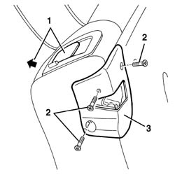
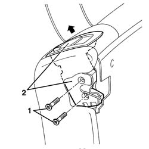
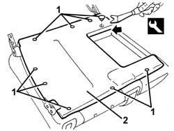
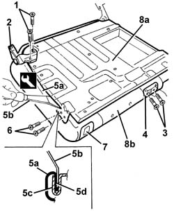
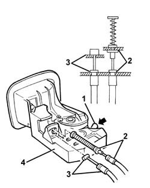
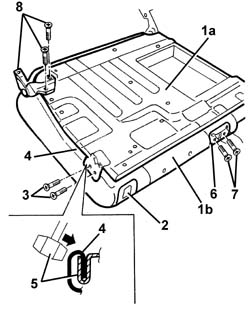

7050A43 ATTACHMENT/RELEASE DEVICE for one SPLIT rear seat BACKREST. -R.R.
- Path
- Procedures > 70 FITTINGS > 7050 REAR SEATS > 7050A rear seat assembly > 7050A43 ATTACHMENT/RELEASE DEVICE for one SPLIT rear seat BACKREST. -R.R.
- Kind
- repair procedure (removal / refitting; the operation number is the code)
- Applies to
- all engines; all production periods
- Interactive page
- https://sloeber94.github.io/elrnDB-a156/en/#/3238926
Applies to: all engines; all production periods; only with equipment: Station Wagon
 Removing
Removing
 Refitting
Refitting1. Release the rear seat squab and move it slightly.
2. Unscrew the bolts.
3. Remove the trim.

Applies to: all engines; all production periods; only with equipment: Station Wagon
1. Unscrew the bolts.
2. Remove the engagement device, withdrawing it upwards.

Applies to: all engines; all production periods; only with equipment: Station Wagon
Refitting
RemovingCheck that the engagement device is not damaged.
Fit the engagement device and fix it with the bolts.
Fit the cover and fix it with the bolt.
Check that the engagement device is working.
If necessary, adjust the striker (see op. 7050A45 STRIKER FOR ATTACHMENT/RELEASE DEVICE for .one( SPLIT rear), seat BACKREST left or right - R.R. ).
Applies to: all engines; all production periods; only with equipment: Station Wagon and Rear seat with central winder
Removing
Refitting7040B28 PET transport PROTECTION and load carrying compartment COVER COMBINATION BLIND - R.R.
7040B10 load platform (luggage platform) trim - r+r
7050A13 SPLIT rear. seat LEFT BACKREST- R.R.
7050A15 SPLIT rear. seat RIGHT BACKREST- R.R.
7050B18 rear seat arm rest - r+r
7050B10 l/h or r/h head restraint (one) of rear seat - r+r
7050B30 rear seat central armest r r
7050A78 ski flap in rear seat squab rr
1. Release the retaining buttons using the special tool.
 | Name | Country |
|---|---|---|
1 | Scraper blade | 1.823.015.000 |
2. Remove the rear cover.

Applies to: all engines; all production periods; only with equipment: Station Wagon and Rear seat with central winder
1. Unscrew the bolts.
2. Remove the squab moutning bracket.
3. Unscrew the bolts.
4. Remove the trim, disconnecting it from the seat belt.
5. Remove the entire cover surround (5a), using the special tool. Use the special tool (5b) to open the groove (5c) and disengage the cover profile (5d).
| Name | Country |
|---|---|---|
5b | Scraper blade | 1.823.014.000 |
6. Undo the catch retaining bolts.
7. Disconnect the cover from the catch.
8. Detach the frame (8a) from the cover with padding (8b).

Applies to: all engines; all production periods; only with equipment: Station Wagon and Rear seat with central winder
1. Manually re-engage the lock.
2. Disconnect the winder control cable from the retainers.
3. Disconnect the locking pin control cable from the retainers.
4. Recover the engagement device.

Applies to: all engines; all production periods; only with equipment: Station Wagon and Rear seat with central winder
Refitting
RemovingCheck that the engagement device is not damaged.
Connect the locking pin control cable to the engagement device retainers.
Connect the winder control cable to the engagement device retainers.
1. Position the cover with padding (1b) on the frame (1a).
2. Fit the catch in its seating on the cover and fix it using the bolts.
3. Tighten the catch retaining bolts.
4. Fit the cover along the entire perimeter.
5. Beat in the groove using a rubber hammer.
Mould the squab cover into shape.
6. Connect the trim to the seat belt.
7. Tighten the screws.
8. Fit the squab mounting bracket and fix it using the bolts.

Applies to: all engines; all production periods; only with equipment: Station Wagon and Rear seat with central winder
Position the top cover and fix it with the retaining buttons.
7050A78 ski flap in rear seat squab rr
7050B30 rear seat central armest r r
7050B10 l/h or r/h head restraint (one) of rear seat - r+r
7050B18 rear seat arm rest - r+r
7050A15 SPLIT rear. seat RIGHT BACKREST- R.R.
7050A13 SPLIT rear. seat LEFT BACKREST- R.R.
7040B10 load platform (luggage platform) trim - r+r
7040B28 PET transport PROTECTION and load carrying compartment COVER COMBINATION BLIND - R.R.
Topics linked from this page (9)
- 7040B10 load platform (luggage platform) trim - r+r
- 7040B28 PET transport PROTECTION and load carrying compartment COVER COMBINATION BLIND - R.R.
- 7050A13 SPLIT rear. seat LEFT BACKREST- R.R.
- 7050A15 SPLIT rear. seat RIGHT BACKREST- R.R.
- 7050A45 STRIKER FOR ATTACHMENT/RELEASE DEVICE for .one( SPLIT rear), seat BACKREST left or right - R.R.
- 7050A78 ski flap in rear seat squab rr
- 7050B10 l/h or r/h head restraint (one) of rear seat - r+r
- 7050B18 rear seat arm rest - r+r
- 7050B30 rear seat central armest r r